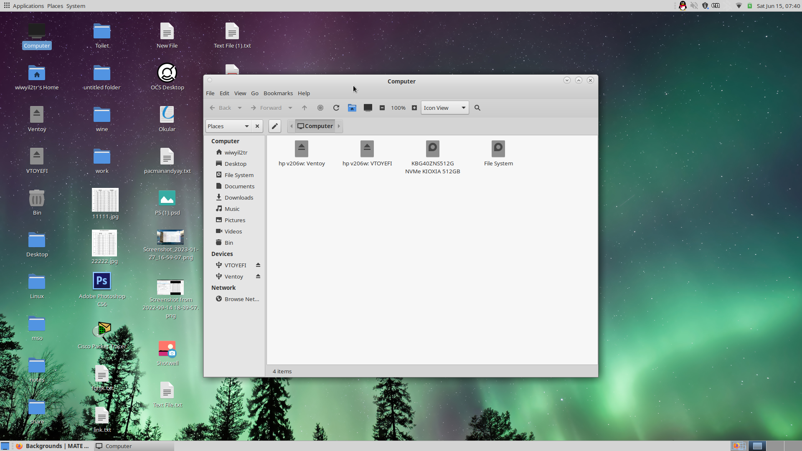
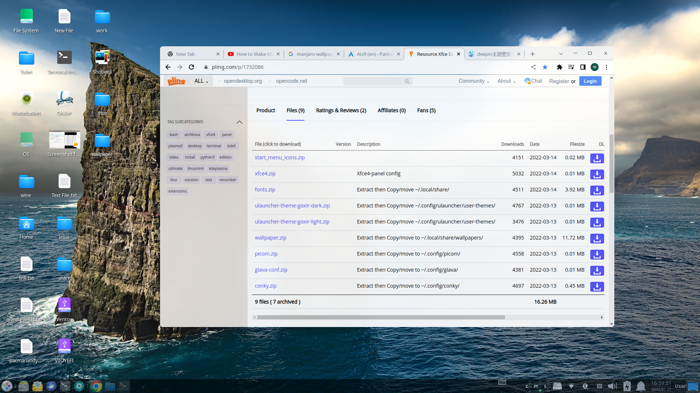
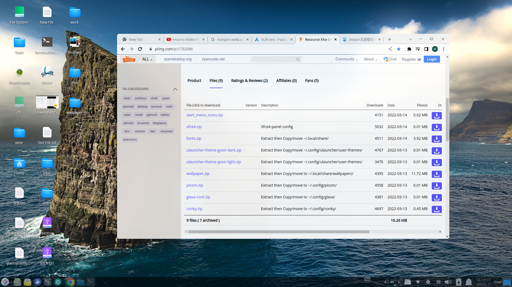

最新动态:
网站更新(20250821)
为了今后维护更方便，我们把 首页（index）、关于我们（about） 和 加入我们（join） 三个页面的内容合并到了同一页面。 即日起，访问https://linux.shxy.tuneful.org.cn 即可一次性浏览全部信息
优化版Debian更新(20250525)
本次更新主要内容： 升级到Debian Sid 全新从零构建 去除一切美化效果，采用TraditioalOk(原gnome2里的clearlooks)为默认主题，加快运行速度，提高性能和界面辨识度，适合专业人士使用 进一步进行了精简，去除不必要的内容，减少资源浪费 LiveCD默认使用root账户登录，方便进行系统管理，建议一定要慎重操作，安装到硬盘还是需要创建普通用户 修复了一些已知问题 点击这里查看详情
添加网页背景(20240925)
添加了linux终端的模糊背景, 使网页看起来比较现代化, 不再那么单调
优化版Debian安装后配置脚本(20240813)
优化版Debian安装后配置脚本
安装后配置脚本已经推出，欢迎大家使用测试
安装完成后, 一定要先打开终端（ctrl+alt+t），然后输入 bash -c "$(curl -L https://github.com/wiwyil2tr/optimizeddebian/raw/main/postinstall.sh)"回车
根据提示操作后重启，就可以使用了
脚本执行后，会自动配置软件源，然后询问是否更新系统，可以按需选择
之后可以选择界面风格，分为以下：
gnome2风格：
 顶栏+dock风格：
顶栏+dock风格：
 windows风格：
windows风格：
 也可以选“skip”跳过此步
最后重启，就能使用系统了
也可以选“skip”跳过此步
最后重启，就能使用系统了
优化版DebianV3.1.1修正版(2024-07-29)
下载链接: https://www.123pan.com/s/jR1SVv-lSB6d.html本次更新主要内容： 修复efi安装时grub配置失败的问题 修复efi无法直接从光盘镜像启动的问题 更新版本号规则:无功能更新,只是小修小补,从第二个小数点开始,如1.0.1,1.0.2,小功能更新从第一个小数点开始,如1.1,1.2,大功能更新或上游大版本升级直接更新大版本号,如1.0,2.0,3.0
优化版Debian V3.1 (2024-07-28)
优化版Debian V3.1
--By wiwyil2tr@gmail.com 下载链接：123云盘本次更新主要内容：
* 修复安装时grub配置失败的问题 * 增加登录时选择用户的功能，无需手动输入用户名 * 增加常用打印机驱动 * 增加光盘刻录软件brasero * 换了一套新的主题(mojave gtk主题, papirus图标主题以及elementary壁纸) * 删除一些不必要的软件包优化版系统特性：
预装常用驱动程序 基于debian testing，滚动更新， 软件始终保持最新 稳定性高，真机实测，debian是一个以稳定性著称的发行版 集成常用软件，包括办公，网页浏览，图片处理，输入法等，开箱即用 完全纯净，无广告，无捆绑 人性化操作，采用广受欢迎的gnome2桌面的延续-mate桌面环境，经典易于上手 轻量高效，占用资源低，可以充分发挥电脑性能预装的部分常用软件
办公：libreoffice 浏览器：火狐浏览器 邮件：thunderbird 视频播放器：smplayer 音频播放器：audacious 图片处理：gimp 命令查询：tldr 输入法：fcitx 星火应用商店，即深度社区商店，具有大量国人常用软件如qq，微信，wps等


 新手尝试Linux时可以一试，不喜勿喷
基本上能做到开箱即用,想在真机上装debian的新手可以试试
安装教程: 先在U盘内安装ventoy,详见https://www.ventoy.net 安装好后将镜像复制到U盘分区内
从U盘启动,选择sulet-optimized-debian-live-testing-v3.1-amd64-mate.iso启动项
启动后,选择最上面第一项回车
启动后,点击桌面上的"Install Debian"就可以安装了,具体步骤详见manjaro的安装教程视频
【重要提示】安装完成后, 一定要更改一下软件源(位于/etc/apt/sources.list)，可以在网上自行搜索软件源, 然后把版本改成 testing ,再更新一下软件源"sudo apt update"，还可以更新一下系统(sudo apt full-upgrade)就可以使用了
-----------------------------------------------------------------------
欢迎使用优化版系列系统,并提出宝贵意见 系统将会不定期更新 版本号规则:无功能更新,只是小修小补,从小数点第二位开始,如1.01,1.02,小功能更新从小数点第一位开始,如1.1,1.2,大功能更新或上游大版本升级直接更新大版本号,如1.0,2.0,3.0 本系列系统旨在为用户提供免除痛苦,开箱即用,干净轻量,不夹带私货,靠近上游的linux修改定制版
新手尝试Linux时可以一试，不喜勿喷
基本上能做到开箱即用,想在真机上装debian的新手可以试试
安装教程: 先在U盘内安装ventoy,详见https://www.ventoy.net 安装好后将镜像复制到U盘分区内
从U盘启动,选择sulet-optimized-debian-live-testing-v3.1-amd64-mate.iso启动项
启动后,选择最上面第一项回车
启动后,点击桌面上的"Install Debian"就可以安装了,具体步骤详见manjaro的安装教程视频
【重要提示】安装完成后, 一定要更改一下软件源(位于/etc/apt/sources.list)，可以在网上自行搜索软件源, 然后把版本改成 testing ,再更新一下软件源"sudo apt update"，还可以更新一下系统(sudo apt full-upgrade)就可以使用了
-----------------------------------------------------------------------
欢迎使用优化版系列系统,并提出宝贵意见 系统将会不定期更新 版本号规则:无功能更新,只是小修小补,从小数点第二位开始,如1.01,1.02,小功能更新从小数点第一位开始,如1.1,1.2,大功能更新或上游大版本升级直接更新大版本号,如1.0,2.0,3.0 本系列系统旨在为用户提供免除痛苦,开箱即用,干净轻量,不夹带私货,靠近上游的linux修改定制版
绥化学院Linux爱好者团队新网站建成(2024-07-20)
感谢团队成员@Tuneful的"天放网"的大力支持， 绥院Linux爱好者团队有了新的网站:linux.shxy.tuneful.org.cn新的网站目前由团队成员@wiwyil2tr维护，访问速度更快， 欢迎大家访问！
优化版Debian V3 全新发布(2024-07-10)
优化版Linux Debian v3.0制作完成
优化版Debian V3.0
--By wiwyil2tr@gmail.com 下载链接：123云盘本次更新主要内容：
更新debian testing到最新 改用mate桌面环境 视频播放器改用更易于操作的smplayer 删除一些不必要的软件包优化版系统特性：
预装常用驱动程序 基于debian testing，滚动更新， 软件始终保持最新 稳定性高，真机实测，debian是一个以稳定性著称的发行版 集成常用软件，包括办公，网页浏览，图片处理，输入法等，开箱即用 完全纯净，无广告，无捆绑 人性化操作，采用广受欢迎的gnome2桌面的延续-mate桌面环境，经典易于上手 轻量高效，占用资源低，可以充分发挥电脑性能预装的部分常用软件
办公：libreoffice 浏览器：火狐浏览器 邮件：thunderbird 视频播放器：smplayer 音频播放器：audacious 图片处理：gimp 命令查询：tldr 输入法：fcitx 星火应用商店，即深度社区商店，具有大量国人常用软件如qq，微信，wps等

 新手尝试Linux时可以一试，不喜勿喷
基本上能做到开箱即用,想在真机上装debian的新手可以试试
安装教程: 先在U盘内安装ventoy,详见https://www.ventoy.net 安装好后将镜像复制到U盘分区内
从U盘启动,选择sulet-optimized-debian-live-testing-v3-amd64-mate.iso启动项
启动后,选择最上面第一项回车
启动后,点击桌面上的"Install Debian"就可以安装了,具体步骤详见manjaro的安装教程视频
安装完成后, 更改一下软件源(位于/etc/apt/sources.list)，可以在网上自行搜索软件源, 然后把版本改成 testing ,再更新一下软件源"sudo apt update"就可以使用了
-----------------------------------------------------------------------
欢迎使用优化版系列系统,并提出宝贵意见 系统将会不定期更新 版本号规则:无功能更新,只是小修小补,从小数点第二位开始,如1.01,1.02,小功能更新从小数点第一位开始,如1.1,1.2,大功能更新或上游大版本升级直接更新大版本号,如1.0,2.0,3.0 本系列系统旨在为用户提供免除痛苦,开箱即用,干净轻量,不夹带私货,靠近上游的linux修改定制版
深度论坛
新手尝试Linux时可以一试，不喜勿喷
基本上能做到开箱即用,想在真机上装debian的新手可以试试
安装教程: 先在U盘内安装ventoy,详见https://www.ventoy.net 安装好后将镜像复制到U盘分区内
从U盘启动,选择sulet-optimized-debian-live-testing-v3-amd64-mate.iso启动项
启动后,选择最上面第一项回车
启动后,点击桌面上的"Install Debian"就可以安装了,具体步骤详见manjaro的安装教程视频
安装完成后, 更改一下软件源(位于/etc/apt/sources.list)，可以在网上自行搜索软件源, 然后把版本改成 testing ,再更新一下软件源"sudo apt update"就可以使用了
-----------------------------------------------------------------------
欢迎使用优化版系列系统,并提出宝贵意见 系统将会不定期更新 版本号规则:无功能更新,只是小修小补,从小数点第二位开始,如1.01,1.02,小功能更新从小数点第一位开始,如1.1,1.2,大功能更新或上游大版本升级直接更新大版本号,如1.0,2.0,3.0 本系列系统旨在为用户提供免除痛苦,开箱即用,干净轻量,不夹带私货,靠近上游的linux修改定制版
深度论坛
优化版Debian v3 桌面环境调查(2024-06-15 09:07:00)
优化版debian好久没更新了, Ubuntu太不稳定, Debian软件包又太老了, 为了解决新手linux选择, 提供便于上手, 开箱即用的Linux, 我打算更新一下优化版的debian, 继续用轻量级桌面环境, 为了更方便新手, 打算改用MATE, 理由如下, 大家觉得继续使用xfce桌面环境还是改用mate好呢? 感谢大家参与
Mate的优点:
* 经典传统的界面, 兼顾mac和windows操作方式, 人性化易于操作, 容易上手
* 功能较多, 自带很多实用工具, 图形界面可完成大部分设置
* 更新较活跃
* Mate是曾经最受欢迎的gnome2的延续, 网上资料较多, 可完美适配各种教程和书籍
缺点
* 占用资源相对于xfce可能要多一点, 本机亲测大概多占0.1G
Mate界面:

xfce默认界面:
 优化版 debian v2 界面:

调查链接, 感谢大家参与:点击这里
优化版 debian v2 界面:

调查链接, 感谢大家参与:点击这里
i3wm主题更新(2024-05-05 14:51:00)
我把i3wm主题配置更新了一下, 通过把i3配置文件中自启动相关的加上了--no-startup-id参数, 解决了启动之后鼠标一直转圈的问题, 修改了polybar配置, 解决了polybar系统托盘显示位置不固定的问题, 项目参见Linux软件和配置文件分享 /My_i3wm_theme_configure.md
绥院Linux爱好者团队全新升级(2024-05-03 17:52:00)
为方便大家交流学习, 绥院Linux爱好者团队全面升级, 启用多平台交流群, 包括QQ, 微信等, 建立了github仓库统一上传文件, 并且建立了官方网站, 欢迎大家加入, 学习交流简介
新的绥院Linux爱好者团队是以QQ群和官网为主体, 多种交流平台共存的大型交流互助社区, 用户可以选择加入自己方便的平台进行交流, 目前支持QQ, 微信, 使用官网统一发布官方动态，使用github团队仓库或者123云盘统一分享文件, 仓库为https://github.com/Linux-SHXY , 官网为linux-shxy.github.io"信息的发布
官方信息将会在官网发布, 以链接的形式转发到各个群里, 官网博客的仓库位置为linux-shxy.github.io/blog.html/, 添加动态时只需按本文格式在上一个动态的上面添加新的内容即可文件的分享
分享文件可上传到仓库sulet中的对应目录里, 原文件需要压缩后上传到对应目录里, 为避免网络问题, 也可以存成txt文件, 里面附上文件的简单介绍和123云盘链接, 绥院Linux爱好者团队秉持开源互助共享原则，上传文件要标明文件名称。上传多个文件最好采用压缩文件格式，推荐采用tar类型的压缩方式，不建议使用rar进行压缩，但是如果在其他地方遇到rar压缩文件也要学会自行解压。 rar是一个专有的文件格式，有严格的版权限制，而且不论什么平台都要另安装专门的软件才能访问和解压，不能直接打开。大部分linux系统是不预装rar相关的软件，这就造成了rar文件在新装的linux系统下无法打开，不方便分享交流。 具体的Linux压缩解压命令可以查看 常用Linux命令/tar.txt 文件。tar.txt文件列出的是一些较为全面的压缩方式，要求灵活运用tar命令。 大于100Mb的文件可以上传到123云盘进行分享。123云盘网址: https://www.123pan.com/ 在浏览器输入网址，注册登录后方可使用。将文件上传到云盘，点击分享，需要将分享有效期设为永久有效。 复制分享链接。 新建一个TXT文件，标明文件名称。内容包括分享链接，提取码，以及必要的文字说明。 QQ群: 微信群:
微信群: